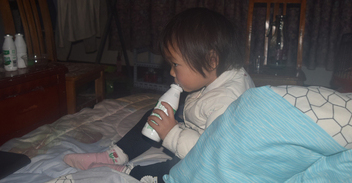
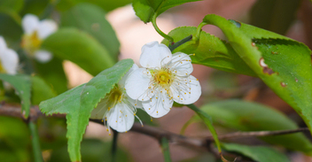
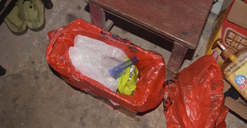
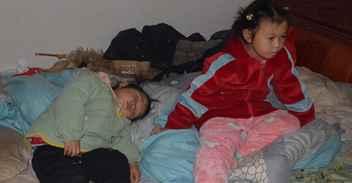
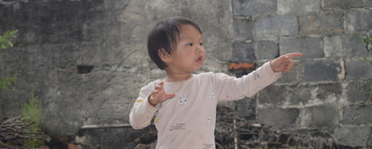
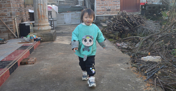
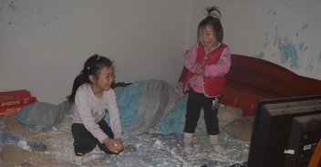
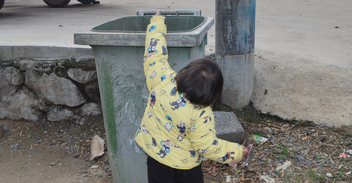
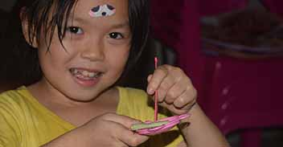

- 
依依总想着过来找我玩，我要哄她才肯回去151
依依奶奶送她过来找我，她一进我房间门就对我说：“大叔，今天怎么不去山上砍树呀。”我就说：“今天天气冷就没去。”她奶奶跟我说，她跟依依说大叔去山上了，她都要过来找我。 - 
依依会帮我做家务，她会帮我扫地150
今天我和依依一起玩耍时，我跟依依说：“玥玥没来我这玩，我好难过。”依依听到后就对我说：“我过来陪你玩啊。”我听到好非常感动、非常的开心。 - 
依依在路上不乱丢垃圾，等回到家再把垃圾丢垃圾桶149
上午九点多时，玥玥就带着妹妹来我家玩，她一过来就要我煮菜吃。然后她就自己在我床上看电脑，依依就自己一个人玩，我就在厨房给玥玥做吃的。 - 
依依在我这睡觉，玥玥看到小狗狗就想给它食物148
我正在厨房煮吃的，突然就听到玥玥在喊：“大叔~大叔~”我回到房间后，玥玥就对我说：“大叔，你看依依睡着了。”我跟她说：“好，那就让她睡吧，别吵到她了。” - 
依依看到我在干活就过来帮忙，她会主动做家务147
今天我在大门口弄柴火期间，依依就过来找我来了。依依看到我在弄柴火，她跟着过来帮我把地上的柴火捡起来，然后把柴火搬到厨房里去。接着她还拿着火钳，把一根根的小柴火棍放进灶里去烧。 - 
依依把瓜子壳丢在地里当肥料，对垃圾分类的初认识146
今天我带着依依玩耍时，我不小心碰到她头了。她就说：“我头痛。”我就对她说：“对不起，依依。”接着她就说：“没关系，你不是故意的，你不小心碰到的。” - 
玥玥依依在床上玩雪花，依依在路上捡垃圾丢垃圾桶145
玥玥和依依没吃早餐，就一起过来我家里玩，依依还开了她的小汽车过来。一来到我这里，玥玥就在我房间里看电脑，依依就在外面玩。由于她们还没有吃早餐，我就去厨房拿了两个昨天煮的鸡蛋给她们吃。 - 
手指受伤后好多天没更新内容，依依捡垃圾丢垃圾桶144
我已经很久没有更新内容了，大概有半个月了吧，在这半个月里，我只是简单记录一下有趣值得记录的事情。其实我是想一直持续更新内容的，我觉得时间太紧，我怕时间不够。 - 
玥玥来我这里写作业，之后她就自己做红薯饼143
今天星期六，早上七点多的时候，玥玥没吃早饭就拿着没做完的作业来过来我这里。她拿着作业刚一进我房间就到床上去，依依就也跟着一起过来了，她也没有吃早饭。由于她们没有吃早饭，我就给她们每人拿了一瓶饮料。
总共151篇 - 全站共计200592字